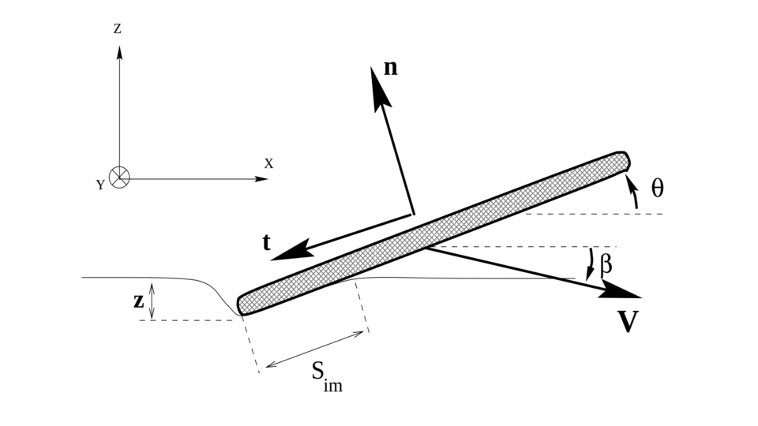
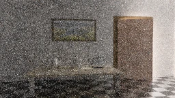

MASc Candidate in Computer Graphics @ ÉTS
euan.hughes.1@ens.etsmtl.ca·GitHub·LinkedIn·CV (PDF)
Last updated
Selected renders from my renderers and projects.
About
I am a MASc candidate in computer graphics at ÉTS under the supervision of Prof. Adrien Gruson and Prof. Eric Paquette.
I am interested in all things rendering! In particular:
- Production rendering
- Light transport algorithms
- High performance graphics
- Sampling
In my free time, I am currently working on my own "production-style" renderer.
Publications
Projects
A production-style Monte Carlo renderer written from scratch in C++20.

An interactive, real-time, physically-based simulation of a stone skipping on a water surface.

An interactive, real-time, in-browser visualization of Metropolis Light Transport.
A from-scratch rendering research playground for prototyping advanced rendering algorithms.

A differentiable volumetric path tracer using 3D Gaussians in a faithful radiative-transfer formulation.